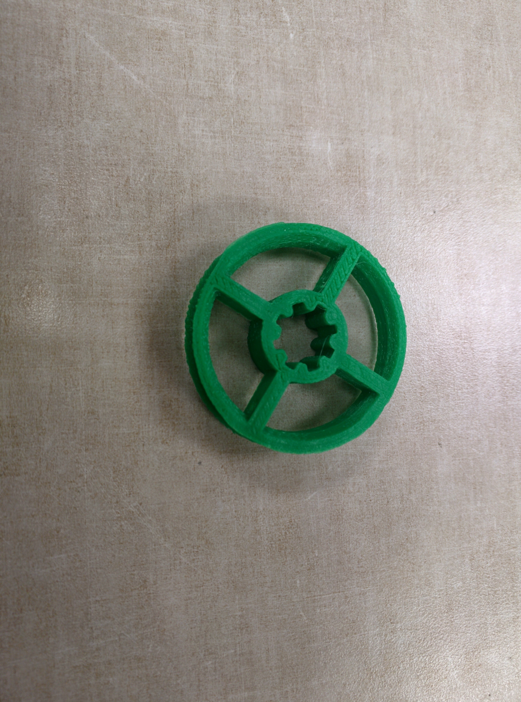
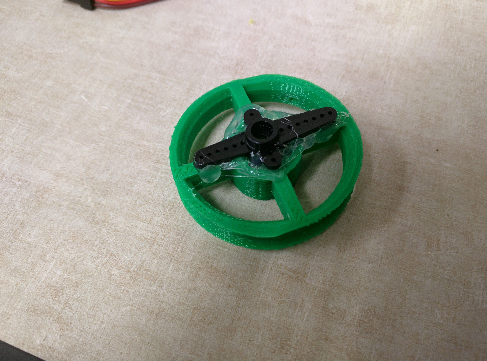
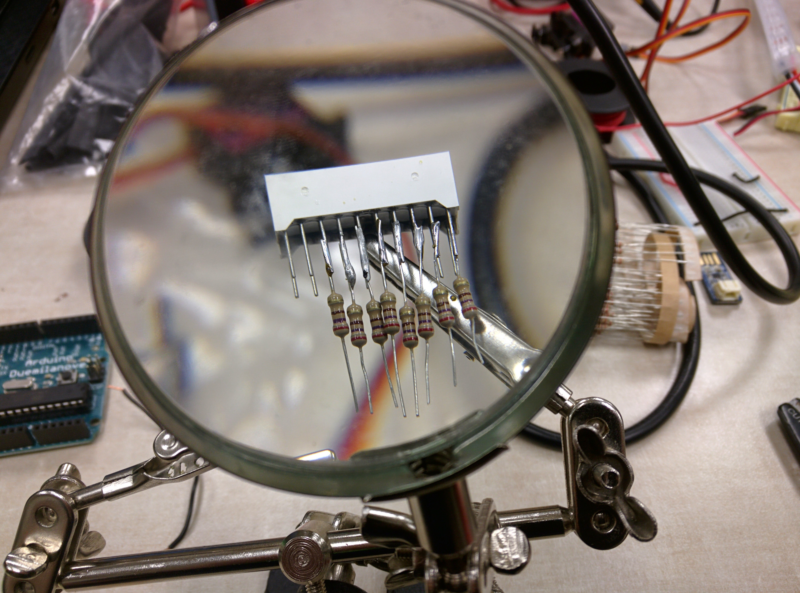
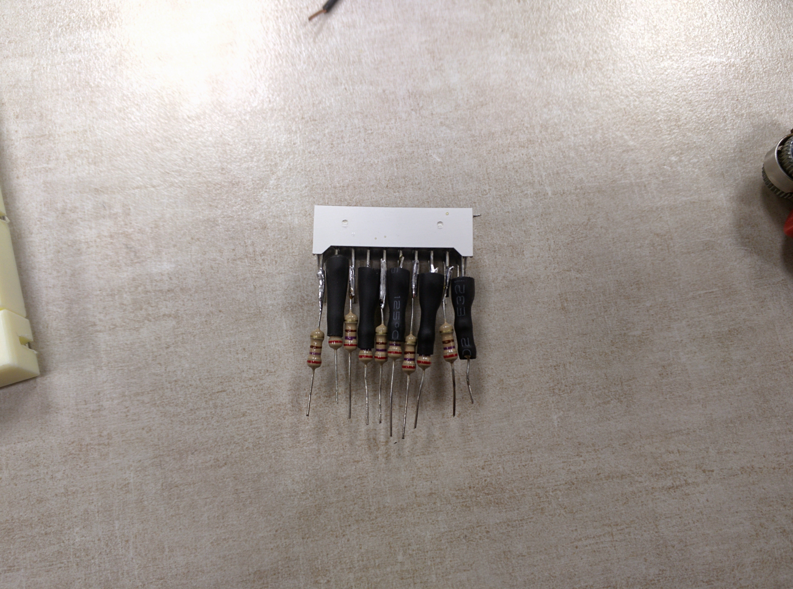
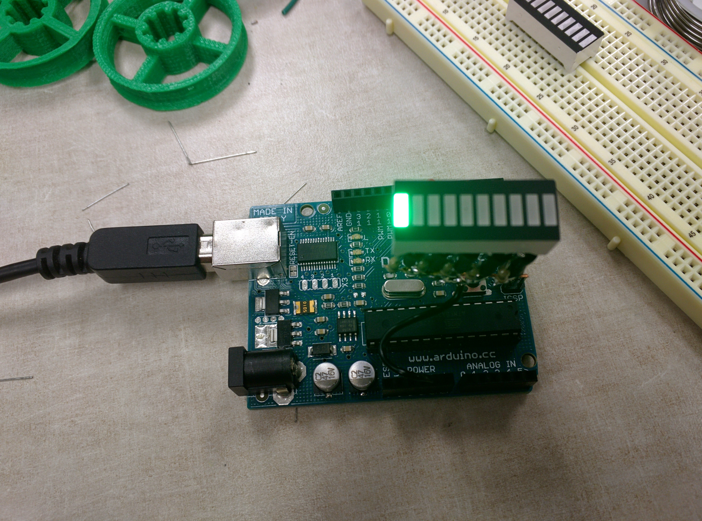
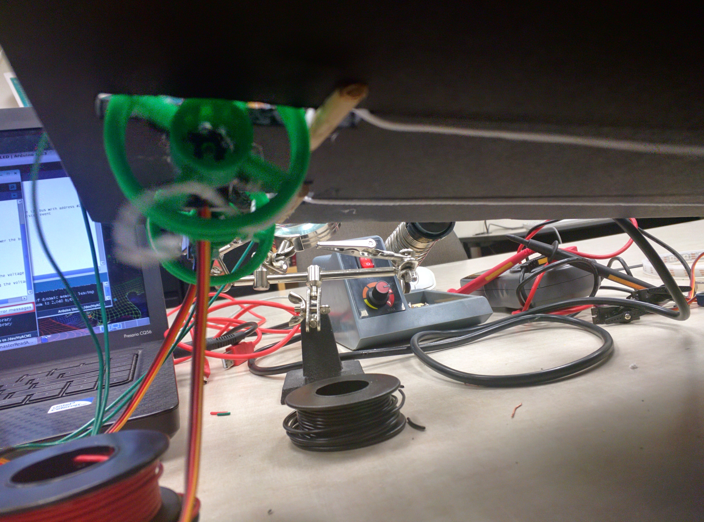
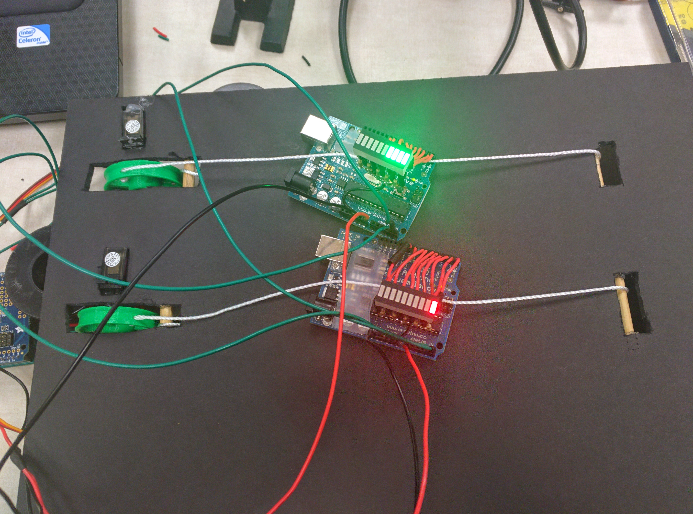
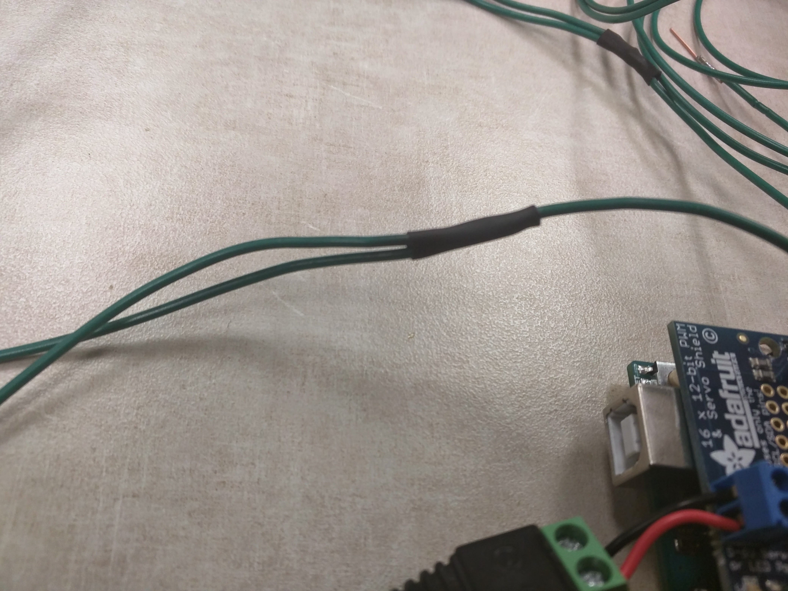
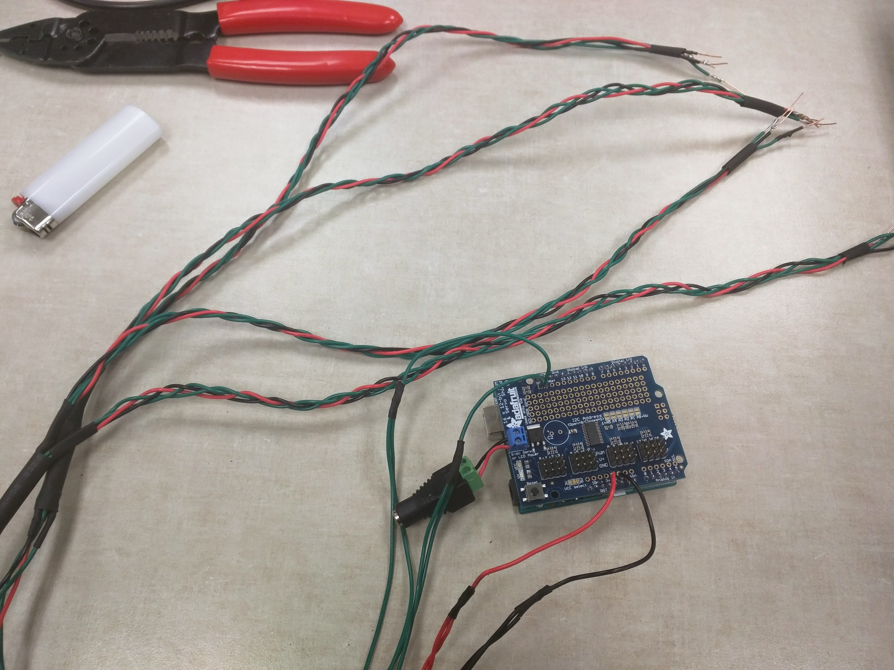

Modeling Kepler's Orbital Laws in One Dimension with a Physical System Using Arduino Analogs
Project maintained by tapiralecThis project is released under the terms of the MIT license.
Final Results First
About the System
Each planet first generates some random values for its semimajor axis and eccentricity. It uses these values to compute its distance from the sun at aphelion and perihelion, and its velocity at those positions.
velocity in a stable elliptical orbit can be given by the Vis-viva equation:
\[v = \sqrt{\mu(\frac{2}{r}-\frac{1}{a})}\\
\mu = \text{gravitational parameter}\\
r = \text{distance between orbiting bodies}\\
a = \text{length of semimajor axis}\]
in order to keep things on the same scale (otherwise some planets might appear not to move at all!) we assume that the \(m_{\text{sun}} \gg m_{\text{planet}} \Rightarrow \mu\) is constant and so we can remove it.
The planet arduinos then spend an amount of time proportional to the inverse of their speed in each of 250 discrete steps around its orbit. Their speed is mapped to the values 1-10 -- 1 being their minimum velocity, and 10 being their maximum velocity -- and is displayed on their LED displays
velocity = sqrt(2.0f / rVals[Rindex]) - (1.0f/semimajorAxis);
float speedBar = map((int)1000*velocity,(int)1000*velocity_MIN,(int)1000*velocity_MAX,1,10);
for (int i = 0; i < 10; i ++){
if (i<speedBar){
digitalWrite(i, HIGH);
} else {
digitalWrite(i, LOW);
}
}
The parent arduino uses the Wire library to request data from each planet arduino, which in turn responds with its current distance from the sun. The parent arduino uses that to set the position of each servo.
Getting the Hardware
shopping list:
5 arduinos (we used one official and 2 sparkfun unos and 2 official duemilanoves)
3D print 4 wheels for the strings. I used these but you can make some by hand out of whatever.

Attach the wheels to the servos (if, like us, there's no good screw point, just hot glue them on)

Attach resistors to the LED displays - I used \(270\Omega\)


Attach a lead from each positive terminal of the LED to D0-10 on the arduino. Use the stiff wire to hold the LEDs in place. Combine the far end of the resistors to a common ground line, and connect that to the GND pin on the arduino.

Line up servo with wheels to board - if attaching with hot glue, cut a hole through the foamboard so that the force is mostly into the board, instead of causing a torque. Also at this time, line up some thin wooden dowel to wrap the string around.

Attach arduinos to string - we just used hot glue. it seems sufficient, as the friction of the raw bottom of the arduino against the paper of the foamboard isn't too much.

Attach a lead from each positive terminal of the LED to D0-10 on the arduino. Combine the far end of the resistors to a common ground line, and connect that to the GND pin on the arduino.
Line up servo with wheels to board - if attaching with hot glue, cut a hole through the foamboard so that the force is mostly into the board, instead of causing a torque. Also at this time, line up some thin wooden dowel to wrap the string around.
From the master arduino, attach a wire to +5V, GND, SCL, SDA. You will need to do inline solder joints to accommodate the number of arduinos you have up top

It's a good idea to braid these cables so they are manageable

Laser cut the acrylic into a shape that allows for the LEDs to poke above the surface - feel free to modify this .svg to the requirements of laser cutter. The reference cyan outline is at 16"x20".
Cut the neopixel strip to the length of the acrylic (25 LEDs for me)
Solder the input side to some wire, and the wire to +5v, GND, and PIN8 on the master arduino
Use the thicker wooden dowel to hold the foamboard layer with the wheels and arduinos above a base sheet of foamboard. make sure these dowel rods extend above the wheel layer with enough clearance to put the acrylic sheet on top.
Do final verification that the code is uploaded to the boards and works correctly. After attaching the walls, it will be difficult to adjust without having to tear something apart.
Hot glue walls to the sides of the assembly - it helps to have 2 people do this. make sure the neopixels are attached to the inside of a wall, at the correct height to line up with the acrylic sheet